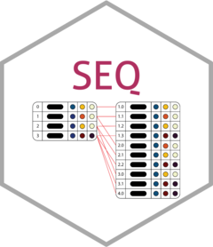

Helper function to prepare data for fastglm
Source:R/internal_fatglmHelpers.R
prepare.data_cached.RdHelper function to prepare data for fastglm

R/internal_fatglmHelpers.R
prepare.data_cached.RdHelper function to prepare data for fastglm